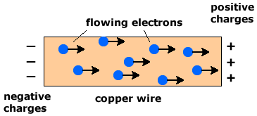
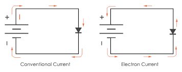

Electric current is the flow of electric charge through a conductor. Understanding current, its direction, and the concept of drift velocity is fundamental to analyzing electrical circuits and the behavior of charged particles in conductors.
What is Electric Current?
$$I = \frac{dq}{dt}$$
Electric current is the rate at which electric charge flows through a cross-sectional area of a conductor. It is measured in amperes (A), where 1 ampere equals 1 coulomb per second.

Flow of charge carriers through a conductor.
Current direction: Defined as the flow of positive charge (conventional current)
Units: Amperes (A) = Coulombs per second (C/s)
Scalar quantity: Current has magnitude but direction is specified by the flow direction
Steady current: When the rate of charge flow is constant over time
Conventional Current vs. Electron Current
$$\text{Conventional Current: } \text{Flow of positive charge}$$
$$\text{Electron Current: } \text{Flow of negative charge (electrons)}$$
There are two ways to think about current direction:
Conventional current: Direction of positive charge flow (historically established)
Electron current: Direction of electron flow (actual particle movement)
Relationship: Conventional current and electron current flow in opposite directions
AP Physics C: Uses conventional current direction for analysis
Historical Note: Benjamin Franklin's "Mistake"
Fun fact: The conventional current direction was established by Benjamin Franklin in the 1700s, before electrons were discovered. Franklin assumed that electricity flowed from positive to negative terminals, which turned out to be backwards! When electrons were discovered in the late 1800s, scientists realized that the actual charge carriers (electrons) flow in the opposite direction.
However, by then the conventional current direction was so well-established in electrical engineering and physics that it was kept as the standard. This is why we still use conventional current direction in circuit analysis today, even though we know electrons actually flow in the opposite direction.

Comparison of conventional current and electron flow directions.
Drift Velocity
Drift velocity is the average velocity of charge carriers (electrons) in a conductor under the influence of an electric field. Despite the high speed of electric field propagation (~speed of light), individual electrons move very slowly.
$$v_d = \frac{I}{nqA}$$
Where:
\(I\) = current
\(n\) = number of charge carriers per unit volume
\(q\) = charge of carrier (e.g., \(e = 1.602 \times 10^{-19}\) C for electrons)
\(A\) = cross-sectional area
Typical values: Drift velocity is very slow (~mm/s or cm/s)
Electric field propagation: Near the speed of light
Collision model: Electrons accelerate between collisions with lattice ions
Memory Trick: NEVADA
Remember the drift velocity formula using NEVADA:
NE = \(ne\) (number density × elementary charge)
V = drift velocity (\(v_d\))
A = cross-sectional area (\(A\))
D = diameter (related to area)
A = area again (\(A\))
So: \(ne \times v_d \times A = I\)
Rearranging: \(v_d = \frac{I}{neA}\)
This helps you remember that \(nev_dA = I\), which rearranges to give the drift velocity formula!
Worked Examples
Example 1: Calculating Current from Charge Flow
Problem: A wire carries 2.5 × 10¹⁹ electrons past a point in 3.0 seconds. What is the current in the wire?
Problem: A copper wire with diameter 2.0 mm carries a current of 5.0 A. If copper has 8.5 × 10²⁸ free electrons per m³, what is the drift velocity of the electrons?
Problem: A wire with cross-sectional area 1.0 × 10⁻⁶ m² carries a current of 3.0 A. If the drift velocity is 2.0 × 10⁻⁴ m/s, what is the concentration of charge carriers?
Answer: The charge carrier concentration is 9.36 × 10²⁸ m⁻³.
Example 4: Time for Charge to Travel
Problem: A copper wire is 10.0 m long and carries a current of 2.0 A. If the drift velocity is 1.0 × 10⁻⁴ m/s, how long does it take for an electron to travel the length of the wire?